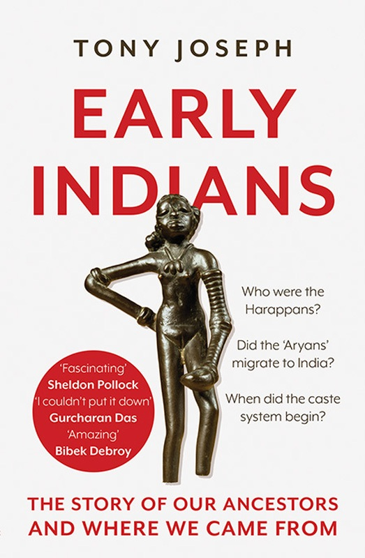

Early
Indians
Tony Joseph’s The Story of Our Ancestors and Where We Came From — as a living atlas. 65,000 years of migration, 4 chapters, 48 pictures, 29 charts, a guided map of 45 places and one very long timeline.

The whole story on one line
Switch the scale to zoom between deep time, the Holocene and the Bronze Age; filter by chapter; click any event. Drag to pan. On a keyboard, Tab moves between events.
Where it happened
Twelve guided stops through the book on a real map — from the exodus across Bab el Mandeb to the Mauryas. Drag the time slider to explore freely, click any place for its story, drag to pan and Ctrl + scroll (or pinch) to zoom.
Coordinates are approximate and migration paths are schematic: they follow the book’s narrative, not exact tracks. Rivers are simplified; modern borders are shown only for orientation.
How We, the Indians, Came to Be
Deep time, cousins and the 0.1% genome
The story of our ancestors — who came from Africa, west Asia, east Asia and central Asia and made this land theirs over the last 65,000 years.
The story in five beats
We are moving even when we feel still
Our evolutionary cousins were a lot like us
Ancient DNA is rewriting prehistory
No ‘pure’ group exists
The Indian ‘pizza’
Cousins and numbers
chartsFaces from the Introduction
tap to enlargeThe First Indians
c. 65,000 years ago — Out of Africa to the subcontinent
Geneticists say 65,000 years; some archaeologists say 120,000. The chapter reconciles them with climate, fossils and DNA.
See Out of Africa on the mapOut of Africa, step by step
drag the slider or press play — on a real mapGenetics in three zooms
the primer every later chapter relies onThe story in five beats
Bhimbetka: a place to feel deep time
Genetics: a one-time bottleneck
Climate opens the door
Fast along the coast
Meeting the archaic locals
The evidence in charts
Maps, shelters and people
The First Farmers
c. 7000 BCE — Mehrgarh and the Zagros migrants
Agriculture arrives at Mehrgarh; ancient DNA shows Iranian farmers moving east and mixing with First Indians.
See Zagros farmers on the mapThe story in five beats
Climate resets, population explodes
Mehrgarh: a village that became a landmark
Where did the Mehrgarhians come from?
Ancient DNA answers: Zagros farmers
Mixed lineages, mixed ancestry
Data from the first villages
Maps and objects
The First Urbanites: The Harappans
2600–1900 BCE — the largest civilization of its time
No palaces, no obvious temples, uniform weights, remarkable plumbing — and a script no one has yet cracked.
See Harappan cities on the mapThe story in five beats
A civilization like no other
Public infrastructure over private palaces
Standardization at scale
From villages to cities
Decline: drought, not invasion
Harappa vs Mesopotamia
as set out in the chapterHarappan Civilization
- No clearly identified temple in the whole civilization
- No clearly recognizable palaces; no monuments to kings
- Burials: ~15 pots of food and drink on average; few ornaments
- One standard of cubic chert weights
- Hundreds of thousands of bangles
- Elaborate water systems; private latrines; public wells
- Very little depiction of human-on-human violence; no war weaponry
Mesopotamia
- 32 ziggurats found (28 in Iraq, 4 in Iran)
- Palaces and sculptures glorifying kings
- Royal burials with hoards of jewellery — sometimes servants too
- A medley of weighing systems by region and commodity
- A few bangles per excavation
- Public conveniences not matched by any contemporary civilization
- Uruk (≈3200 BCE) — first ‘city’ by Gordon Childe’s criteria
Harappa in numbers
Cities, seals and everyday life
sites & infrastructureSeals and the unread script
including Mesopotamian comparisonsThe script is undeciphered. The chapter surveys readings by Iravatham Mahadevan (Dravidian grammar signs) and Asko Parpola (the fish sign as miin, ‘fish’ and ‘star’), and notes the Elamo-Dravidian hypothesis.
The Last Migrants: The ‘Aryans’
2000–1000 BCE — Steppe pastoralists enter South Asia
Ancient DNA, linguistics and the Rigveda tell one story: a male-driven migration from the Eurasian Steppe in the second millennium BCE.
See Steppe routes on the mapThe story in five beats
Languages and the Yamnaya
A male-driven expansion
The Y-chromosome points to the Steppe
Swat tells the timeline
Layering, not replacement
Evidence in charts
Maps of migration and language
Dholavira and the Rigveda’s ‘shishna-deva’
a cultural contrast the book highlightsAppendix · The Ghaggar–Hakra question
The claim
The problems
Seeing History the Right Side Up
Caste, the Indian pizza and what the story means
A subjective commentary on what the book tells us — and an examination of how caste came to be.
See the toppings on the map